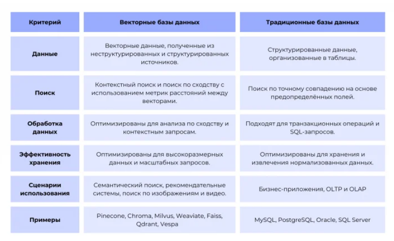
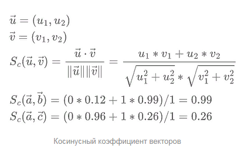
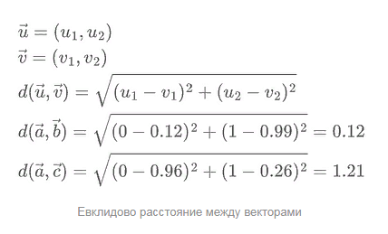
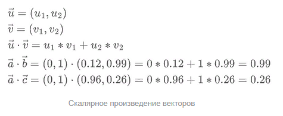
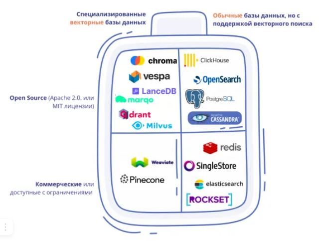

1. Назначение векторных баз данных
После того как мы научились преобразовывать текст в векторные представления — эмбеддинги, возникает практическая задача их хранения и быстрого поиска. В зависимости от масштаба проекта, количество векторов может достигать миллионов и даже миллиардов. Обычные реляционные базы данных, такие как PostgreSQL или MySQL, для этой задачи не подходят, поскольку они оптимизированы для точного поиска по совпадению ключей или по индексированным полям. Поиск же по смыслу требует сравнения расстояний между многомерными векторами, и полный перебор всех векторов (алгоритм KNN) при миллионах документов становится неприемлемо медленным для приложений, работающих в реальном времени.
Именно здесь на сцену выходят векторные базы данных. Это специализированные системы, которые обеспечивают эффективное хранение векторных представлений, создание специальных индексов для ускорения поиска и возможность горизонтального масштабирования до миллиардов векторов. В архитектуре RAG-системы векторная база данных играет роль долговременной памяти, где хранятся знания, извлечённые из документов. Когда пользователь задаёт вопрос, система преобразует вопрос в эмбеддинг, и векторная база данных быстро находит наиболее семантически близкие фрагменты из хранилища знаний.

2. Метрики сходства
Для измерения похожести векторов используются различные метрики расстояния. Выбор метрики зависит от конкретной задачи и модели эмбеддингов, и обычно в документации к модели указывается, какая метрика для неё предпочтительна.
Наиболее популярной метрикой для текстовых задач является косинусное сходство (cosine similarity). Оно измеряет косинус угла между двумя векторами и возвращает значение от -1 до 1, где 1 означает, что векторы сонаправлены и, следовательно, семантически идентичны. Главное преимущество косинусного сходства в том, что оно не зависит от длины векторов — для смысла важнее направление, а не «размер» вектора. Это делает его идеальным выбором для сравнения текстов разной длины.

Евклидово расстояние (L2) измеряет геометрическое расстояние между точками в многомерном пространстве. Оно подходит для случаев, когда важна не только ориентация, но и «длина» вектора. Чем меньше евклидово расстояние, тем ближе векторы друг к другу. Эта метрика часто используется в задачах компьютерного зрения, где векторы имеют естественную интерпретацию как координаты в пространстве признаков.

Скалярное произведение (dot product) — это ещё одна популярная метрика, особенно в рекомендательных системах. Для нормализованных векторов (имеющих единичную длину) скалярное произведение эквивалентно косинусному сходству, поскольку cos(θ) = (A·B) / (||A|| × ||B||), и если длины векторов равны 1, то знаменатель обращается в 1. Скалярное произведение удобно тем, что его вычисление требует меньше операций, чем косинусное сходство.

3. Алгоритмы приближённого поиска
Полный перебор всех векторов, известный как алгоритм KNN, даёт стопроцентно точные результаты, но его вычислительная сложность растёт линейно с количеством векторов. При массе в миллионы векторов время ответа становится неприемлемым. Поэтому векторные базы данных используют алгоритмы приближённого поиска ближайших соседей (ANN — Approximate Nearest Neighbors), которые жертвуют небольшой частью точности ради кардинального — в десятки и сотни раз — ускорения.
Одним из самых простых и популярных алгоритмов является IVF (Inverted File Index). Он работает следующим образом: всё векторное пространство разбивается на определённое количество кластеров с помощью алгоритма кластеризации, такого как k-means. При поиске для заданного вектора-запроса сначала определяются ближайшие кластеры, а затем поиск производится только среди векторов, входящих в эти кластеры. Это приводит к значительному ускорению, поскольку отсекаются заведомо далёкие группы векторов.
Алгоритм HNSW (Hierarchical Navigable Small World) считается одним из самых эффективных по соотношению скорости и точности на сегодняшний день. Он строит многослойную графовую структуру, где на верхних, самых разреженных слоях находятся «длинные» связи между далёкими векторами, а на нижних, самых плотных слоях — «короткие» связи между близкими соседями. Поиск начинается с верхнего слоя, где вектор-запрос быстро перемещается к ближайшим узлам, а затем спускается на нижние слои для уточнения. HNSW показывает впечатляющие результаты, но требует больше памяти для хранения графа.
Алгоритм Product Quantization (PQ) используется преимущественно для сжатия векторов. Он разбивает вектор на несколько подвекторов и для каждого из них создаёт код — по сути, аппроксимирует исходный вектор компактным представлением. PQ позволяет значительно уменьшить занимаемую память — например, с 4 байт на измерение до 1 байта, — ценой небольшого снижения точности поиска. Часто алгоритмы комбинируются: например, IVF+PQ или HNSW+PQ для достижения оптимального баланса между скоростью, точностью и потреблением памяти.
| Алгоритм | Скорость | Точность | Память | Когда использовать |
|---|---|---|---|---|
| Полный перебор | Очень низкая | 100% | Высокая | Маленькие датасеты, отладка |
| IVF | Высокая | 90-95% | Средняя | Первый выбор для многих задач |
| HNSW | Очень высокая | 95-99% | Высокая | Приоритет скорости и точности, память не критична |
| IVF+PQ | Высокая | 90-95% | Низкая | Экономия памяти |
4. Популярные векторные базы данных
На рынке существует множество векторных баз данных, от лёгких библиотек до промышленных систем. Рассмотрим наиболее популярные решения.

FAISS — это библиотека от исследовательского подразделения Meta (Facebook AI Similarity Search). Она обеспечивает чрезвычайно быстрый поиск, поддерживает все основные алгоритмы индексации (IVF, HNSW, PQ и их комбинации) и активно используется в исследовательских проектах. Однако FAISS — это библиотека, а не полноценная база данных: она хранит данные в оперативной памяти и не предоставляет функций управления данными (добавление, удаление, обновление), что ограничивает её применение в production-системах.
Chroma — это лёгкая встраиваемая векторная база данных, написанная на Python. Она предельно проста в установке и использовании, поддерживает персистентное хранение на диске, метаданные и фильтрацию. Chroma идеально подходит для обучения, прототипирования и небольших проектов. Именно эту базу данных мы используем в нашем курсе, поскольку она позволяет сосредоточиться на понимании принципов RAG, а не на сложной настройке инфраструктуры.
Qdrant — это полноценная векторная база данных, написанная на Rust, что обеспечивает высокую производительность и надёжность. Она использует клиент-серверную архитектуру, поддерживает фильтрацию по метаданным, гибридный поиск (векторный + ключевой) и может работать как в оперативной памяти, так и на диске. Qdrant — отличный выбор для production-систем среднего масштаба.
Milvus — это мощная промышленная векторная база данных, способная работать с миллиардами векторов. Она поддерживает распределённые развёртывания, обеспечивает высокую доступность и продвинутые функции управления данными. Milvus — выбор для крупных корпоративных проектов с огромными объёмами данных.
pgvector — это расширение для PostgreSQL, добавляющее поддержку векторных типов и операторов поиска по сходству. Его главное преимущество в том, что оно позволяет использовать одну базу данных и для реляционных, и для векторных данных, упрощая инфраструктуру. pgvector — удобное решение, если PostgreSQL уже используется в проекте.
5. Работа с метаданными и гибридный поиск
В реальных приложениях бывает недостаточно просто найти семантически близкие фрагменты. Часто требуется дополнительно отфильтровать результаты по определённым критериям: например, «показать только документы, созданные не ранее 2024 года» или «искать только в PDF-файлах». Для этого к каждому вектору прикрепляются метаданные — структурированная информация, описывающая исходный документ. Типичные метаданные включают: уникальный идентификатор документа, имя файла, автора, дату создания, тип документа, номер страницы и любую другую релевантную информацию.
Гибридный поиск с фильтрацией работает в два этапа. На первом этапе векторная база данных применяет фильтр по метаданным, отсеивая все векторы, не соответствующие заданным условиям. Этот этап выполняется с использованием обычных индексов по метаданным и очень быстр. На втором этапе среди оставшихся векторов выполняется приближённый поиск по сходству с вектором-запросом. Такой подход значительно повышает релевантность результатов, поскольку поиск производится только в релевантной подвыборке данных.
Некоторые современные векторные базы данных, такие как Qdrant и Elasticsearch, поддерживают более продвинутые формы гибридного поиска. Например, они могут комбинировать результаты векторного поиска с результатами традиционного полнотекстового поиска по ключевым словам, объединяя их с помощью взвешенной суммы или алгоритма ранжирования RRF (Reciprocal Rank Fusion). Это позволяет учитывать и семантическую близость, и точное совпадение терминов, что часто даёт наилучшие результаты.
6. Как выбрать векторную базу данных
Выбор векторной базы данных — важное архитектурное решение, зависящее от масштаба проекта, требуемой производительности и инфраструктурных ограничений. Рассмотрим ключевые факторы.
Первым и главным фактором является масштаб данных. Для небольших проектов с тысячами или десятками тысяч векторов подойдёт любое решение, включая простую библиотеку FAISS или лёгкую Chroma. При переходе к миллионам векторов уже потребуются более продвинутые алгоритмы индексации. Для сотен миллионов или миллиардов векторов понадобится промышленная система, такая как Milvus, способная работать в распределённом режиме.
Второй фактор — требования к скорости и точности. Если для вашего приложения критична максимальная точность, возможно, стоит использовать полный перебор, но это ограничит масштаб. Если же скорость важнее, а небольшая потеря точности допустима, стоит выбрать HNSW как наиболее эффективный алгоритм.
Третий фактор — необходимость фильтрации по метаданным и гибридного поиска. Многие векторные базы данных поддерживают базовую фильтрацию, но продвинутые возможности (гибридный поиск, сложные условия) есть не у всех.
Четвёртый фактор — инфраструктурные и эксплуатационные ограничения. У вас есть возможность развернуть и поддерживать выделенный сервер для векторной базы данных? Или вам нужно встраиваемое решение, работающее в том же процессе, что и основной код? Какова ваша экспертиза в администрировании баз данных?
Исходя из этих соображений, можно дать следующие рекомендации. Для начала проекта и обучения отлично подходит Chroma — она проста в установке, имеет понятный API, поддерживает метаданные и персистентное хранение. Для production-систем среднего масштаба (до десятков миллионов векторов) стоит присмотреться к Qdrant — он предлагает хороший баланс функциональности и производительности. Для крупных корпоративных проектов с миллиардами векторов лучше выбрать Milvus. Если вы уже используете PostgreSQL в проекте, удобным решением станет расширение pgvector — оно позволит хранить все данные в одной системе.
Вопросы для самоконтроля
- Почему обычные базы данных не подходят для поиска по смыслу?
- Какие метрики сходства используются для векторов и в чём их особенности?
- В чём суть алгоритмов приближённого поиска и чем они отличаются от полного перебора?
- Чем FAISS отличается от полноценной векторной БД?
- Зачем нужны метаданные и как работает гибридный поиск?
- Как выбрать векторную базу данных для вашего проекта?